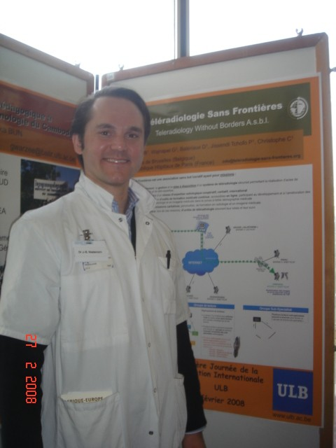

Founders
The founders
Teleradiology Without Borders was founded in 2007 by two radiologists: Dr. Jean-Baptiste Niedercorn, MD and Dr. Gérald Wajnapel, MD.

Dr. Jean-Baptiste Niedercorn, MD
Co-founder · Radiologist
A radiologist, Dr. Niedercorn co-founded Teleradiology Without Borders in 2007. He is among the authors of the first publication describing the network (Journal de Radiologie, 2008), alongside Gérald Wajnapel.
Radiologist — Hôpitaux Robert Schuman, Luxembourg.
Dr. Gérald Wajnapel, MD
Co-founder · Radiologist
A radiologist, Dr. Wajnapel co-founded Teleradiology Without Borders in 2007. He is a co-author of the network’s founding publication in the Journal de Radiologie (2008).
Radiologist — Association Radiologique de la Muette, Paris.